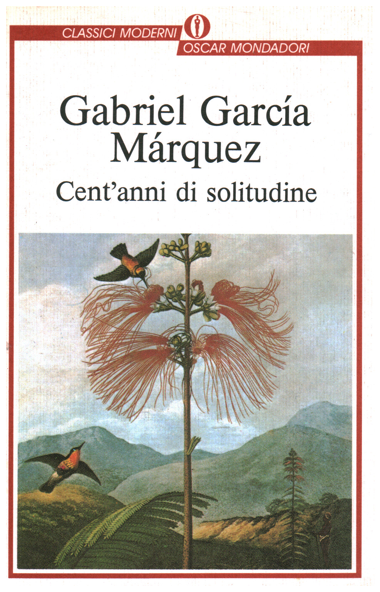

jov
oni.
Home
Info
Libri
Film
Musica
Tutti i libri consigliati
Un elenco
sempre in espansione
di letture meritevoli
Ecco quindi la lista dei libri che penso meritino di essere letti. Sicuramente molti titoli li ho scordati, ma i più belli li ho comunque segnati con un
trattino rosso
.
STO LEGGENDO
Cent'anni di solitudine
di Gabriel Garcia Marquez

LETTURE PASSATE
Il conte di Montecristo
di Alexandre Dumas
Arancia meccanica
di Anthony Burgess
La via dei re
di Brandon Sanderson
Il cuore è un cacciatore solitario
di Carson McCullers
La casa in collina
di Cesare Pavese
L'arte di vivere in difesa
di Chad Harbach
Un'odissea. Un padre, un figlio e un poema epico
di Daniel Mendelsohn
Spillover. L'evoluzione delle pandemie
di David Quammen
Dio di illusioni
di Donna Tartt
Noi, I ragazzi dello zoo di Berlino
di F. Christiane
Delitto e castigo
di Fiodor Dostoevskij
La fattoria degli animali
di George Orwell
Le menzogne della notte
di Gesualdo Bufalino
Kafka sulla spiaggia
di Haruki Murakami
Norwegian wood
di Haruki Murakami
Espiazione
di Ian McEwan
Macchine come me
di Ian McEwan
Solanin
di Inio Asano
Il sentiero dei nidi di ragno
di Italo Calvino
Il giovane Holden
di J.D.Salinger
Il signore degli anelli
di J.R.R. Tolkien
Lo Hobbit
di J.R.R. Tolkien
Il leopardo
di Jo Nesbo
L'uomo di neve
di Jo Nesbo
La ragazza senza volto
di Jo Nesbo
Polizia
di Jo Nesbo
La valle dell'Eden
di John Steinbeck
Uomini e topi
di John Steinbeck
Augustus
di John Williams
Stoner
di John Williams
Molto forte, incredibilmente vicino
di Jonathan Safran Foer
Possiamo salvare il mondo, prima di cena
di Jonathan Safran Foer
Caino
di Josè Saramago
Venuto al mondo
di Margaret Mazzantini
American Gods
di Neil Gaiman
Follia
di Patrick McGrath
Pastorale Americana
di Philip Roth
Bomba atomica
di Roberto Marcadini
Beautiful world, where are you
di Sally Rooney
Normal people
di Sally Rooney
Parlarne tra amici
di Sally Rooney
La Chimera
di Sebastiano Vassalli
Abbiamo sempre vissuto nel castello
di Shirley Jackson
La lunga marcia
di Stephen King
Notre Dame de Paris
di Victor Hugo